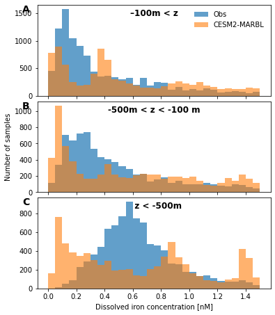
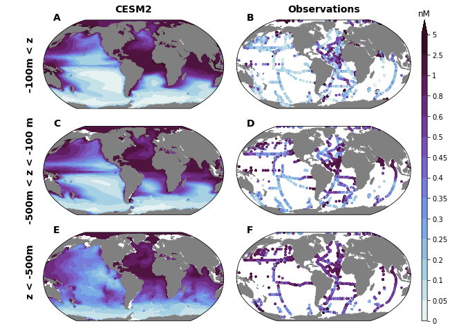

Ocean iron concentration
%load_ext autoreload
%autoreload 2
import xarray as xr
from dask.distributed import Client
import catalog
import util
xr.set_options(keep_attrs=True)
/glade/work/kristenk/miniconda/envs/cesm-exp/lib/python3.7/site-packages/dask_jobqueue/core.py:20: FutureWarning: tmpfile is deprecated and will be removed in a future release. Please use dask.utils.tmpfile instead.
from distributed.utils import tmpfile
<xarray.core.options.set_options at 0x2b294397d810>
import matplotlib.pyplot as plt
import cartopy
import cartopy.crs as ccrs
import pop_tools
import pandas as pd
import tools
import plot
import matt_utils
import matplotlib.gridspec as gridspec
import numpy as np
from itertools import product
import cmocean
import matplotlib.colors as colors
ds_grid = pop_tools.get_grid('POP_gx1v7')
lons = ds_grid.TLONG
lats = ds_grid.TLAT
depths = ds_grid.z_t * 0.01
Parameters
casename = 'g.e22a06.G1850ECOIAF_JRA_PHYS_DEV.TL319_g17.scope_v1'
component = 'pop'
stream = 'h'
cluster_scheduler_address = None
assert component in ['pop']
assert stream in ['h', 'h.ecosys.nday1']
Connect to cluster
if cluster_scheduler_address is None:
cluster, client = util.get_ClusterClient()
cluster.scale(12)
else:
client = Client(cluster_scheduler_address)
client
/glade/work/kristenk/miniconda/envs/cesm-exp/lib/python3.7/site-packages/distributed/node.py:182: UserWarning: Port 8787 is already in use.
Perhaps you already have a cluster running?
Hosting the HTTP server on port 41231 instead
f"Port {expected} is already in use.\n"
Client
Client-a8283290-0139-11ed-bb42-3cecef1b11fa
| Connection method: Cluster object | Cluster type: dask_jobqueue.PBSCluster |
| Dashboard: https://jupyterhub.hpc.ucar.edu/stable/user/kristenk/proxy/41231/status |
Cluster Info
PBSCluster
d58c40c6
| Dashboard: https://jupyterhub.hpc.ucar.edu/stable/user/kristenk/proxy/41231/status | Workers: 0 |
| Total threads: 0 | Total memory: 0 B |
Scheduler Info
Scheduler
Scheduler-ac524d06-b979-40f6-b521-1a20fbbb3430
| Comm: tcp://10.12.206.54:44413 | Workers: 0 |
| Dashboard: https://jupyterhub.hpc.ucar.edu/stable/user/kristenk/proxy/41231/status | Total threads: 0 |
| Started: Just now | Total memory: 0 B |
Workers
Load the data
dsets = catalog.to_dataset_dict(
case=casename,
component=component,
stream=stream,
)
dsets.keys()
dict_keys(['g.e22a06.G1850ECOIAF_JRA_PHYS_DEV.TL319_g17.scope_v1.pop.h'])
Compute long-term mean Fe concentration
ds = dsets[f'{casename}.{component}.{stream}']
variables =['Fe']
keep_vars=['z_t','z_t_150m','dz','time_bound','TAREA','TLAT','TLONG'] + variables
ds = ds.drop([v for v in ds.variables if v not in keep_vars])
ds.Fe.isel(time=0,z_t=0).plot()
<matplotlib.collections.QuadMesh at 0x2b2949e0f450>
dt_wgt = ds.time_bound.diff('d2').squeeze()
dt_wgt /= dt_wgt.sum()
#dt_wgt
ds = ds.weighted(dt_wgt).mean('time')
nmolcm3_to_nM = 1.e3
ds['Fe'] = ds['Fe'] * nmolcm3_to_nM
ds['Fe'].attrs['units'] = 'nM'
Compare to observational Fe database
(need ref)
dFe_obs_file = '/glade/u/home/kristenk/cesm2-marbl/notebooks/discrete_obs/dFe-database-2021-05-20.csv'
df = pd.read_csv(dFe_obs_file, na_values=-999.).dropna(axis=0, how='all')
%%time
df.obs_stream.add_model_field(ds.Fe)
df
CPU times: user 1min 58s, sys: 4.42 s, total: 2min 3s
Wall time: 6min 57s
| lon | lat | depth | dFe_obs | Fe | |
|---|---|---|---|---|---|
| 0 | 210.010 | -16.0018 | 20.0 | 0.540000 | 0.047255 |
| 1 | 210.010 | -16.0018 | 35.0 | 0.440000 | 0.047110 |
| 2 | 210.010 | -16.0019 | 50.0 | 0.480000 | 0.046569 |
| 3 | 210.010 | -16.0019 | 80.0 | 0.400000 | 0.044805 |
| 4 | 210.010 | -16.0020 | 100.0 | 0.390000 | 0.048094 |
| ... | ... | ... | ... | ... | ... |
| 27777 | 160.051 | 47.0032 | 3929.6 | 0.825681 | 0.466740 |
| 27778 | 160.051 | 47.0032 | 3929.8 | 0.902248 | 0.466748 |
| 27779 | 160.051 | 47.0032 | 4900.4 | 0.555630 | NaN |
| 27780 | 160.051 | 47.0032 | 4900.9 | 0.621851 | NaN |
| 27781 | 160.051 | 47.0032 | 5210.1 | 0.573220 | NaN |
27782 rows × 5 columns
plt.plot(df.dFe_obs, df.Fe, '.')
plt.xlabel('CESM2 dFe [nM]')
plt.ylabel('Obs dFe [nM]')
plt.plot([0, 5], [0, 5], 'r-')
[<matplotlib.lines.Line2D at 0x2b2966219050>]
fig, axs = plot.canvas(3, 1, figsize=(6, 2.5), use_gridspec=True, hspace=0.06)
dx = 0.05
bin_edges = np.arange(0., 1.5+dx, dx)
bins = np.vstack((bin_edges[:-1], bin_edges[1:])).mean(axis=0)
depth_ranges = {
'–100m < z': (0., 100.),
'-500m < z < -100 m': (100., 500.),
' z < -500m': (500., 1e36),
}
for n, (key, depth_range) in enumerate(depth_ranges.items()):
ax = axs[n, 0]
df_sub = df.loc[(depth_range[0] <= df.depth) & (df.depth <= depth_range[1])]
hist, _ = np.histogram(df_sub.dFe_obs.values, bin_edges)
ax.bar(bins, hist, width=dx, alpha=0.7, label='Obs')
hist, _ = np.histogram(df_sub.Fe.values, bin_edges)
ax.bar(bins, hist, width=dx, alpha=0.6, label='CESM2-MARBL')
if n == 0:
ax.legend(loc='upper right', frameon=False)
if n < 2:
ax.set_xticklabels([])
ylm = ax.get_ylim()
ax.text(0.75, ylm[1] - 0.12 * np.diff(ylm), key,
fontweight='bold',
fontsize=12,
ha='center',
)
if n == 1:
ax.set_ylabel('Number of samples')
if n == 2:
ax.set_xlabel('Dissolved iron concentration [nM]')
matt_utils.label_plots(fig, [ax for ax in axs.ravel()], xoff=-0.05, yoff=-0.02)

dsp = matt_utils.pop_add_cyclic(ds)
field = 'Fe'
levels = {'Fe': [0., 0.05, 0.1, 0.2, 0.25, 0.3, 0.35, 0.4, 0.45, 0.5, 0.6, 0.8, 1., 2.5, 5.0]}
fig = plt.figure(figsize=(10, 8))
prj = ccrs.Robinson(central_longitude=305.0)
nrow, ncol = 3, 2
gs = gridspec.GridSpec(
nrows=nrow, ncols=ncol+1,
width_ratios=(1, 1, 0.03),
wspace=0.05,
hspace=0.2,
)
axs = np.empty((nrow, ncol)).astype(object)
caxs= np.empty((nrow, ncol)).astype(object)
for i, j in product(range(nrow), range(ncol)):
axs[i, j] = plt.subplot(gs[i, j], projection=prj)
cax = plt.subplot(gs[:, -1])
cmap_field = cmocean.cm.dense
for i, (key, depth_range) in enumerate(depth_ranges.items()):
for j in range(2):
ax = axs[i, j]
if j == 0:
zslice = slice(depth_range[0]*100., depth_range[1]*100.)
cf = ax.contourf(
dsp.TLONG,dsp.TLAT, dsp[field].sel(z_t=zslice).mean('z_t'),
levels=levels[field],
extend='max',
cmap=cmap_field,
norm=colors.BoundaryNorm(levels[field], ncolors=cmap_field.N),
transform=ccrs.PlateCarree(),
)
else:
df_sub = df.loc[(depth_range[0] <= df.depth) & (df.depth <= depth_range[1])]
sc = ax.scatter(
df_sub.lon, df_sub.lat, c=df_sub.dFe_obs.values,
cmap=cmap_field,
norm=colors.BoundaryNorm(levels[field], ncolors=cmap_field.N),
s=6,
transform=ccrs.PlateCarree(),
)
land = ax.add_feature(
cartopy.feature.NaturalEarthFeature(
'physical','land','110m',
edgecolor='face',
facecolor='gray'
)
)
cb = plt.colorbar(cf, cax=cax, ticks=levels['Fe'])
if 'units' in dsp[field].attrs:
cb.ax.set_title(dsp[field].attrs['units'])
cb.ax.set_yticklabels([f'{f:g}' for f in levels['Fe']])
matt_utils.subplot_col_labels(axs[0, :], ['CESM2', 'Observations'])
matt_utils.subplot_row_labels(axs[:, 0], depth_ranges.keys(), xoff=60)
matt_utils.label_plots(fig, [ax for ax in axs.ravel()], xoff=0.02, yoff=0)
